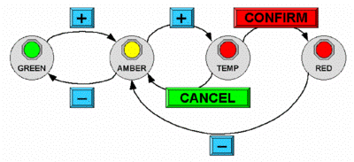

H
C
I
Resources
Exercises
Part I. Foundations
CHAPTERS
Introduction
Chapter I. The Human
Chapter II. The Computer
Chapter III. The Interaction
Chapter IV. Paradigms
Part II. Design Process
Chapters
Chapter V. Design Basics
Chapter VI. Software Proces
Chapter VII. Design Rules
Chapter VIII. Implementation
Chapter IX. Evaluation
Chapter X. Universal Design
Chapter XI. User Support
Part III. Models and Theories
Chapters
Chapter XII: Cognitive Models
Chapter XIII: Socio-Organizational
Chapter XIV: Comm and Collab
Chapter XV: Taks Models
Chapter XVI: Dialogue
Chapter XVII: Models of System
Chapter XVIII: Rich Interaction
@angelosancez_2
Home
Exercises - Dialogue Notations and Design
Exercise 16.1
Complete the drawing tool STN in Figures 16.1 and 16.3 by writing dialog descriptions for the text and paint submenus. For the text submenu assume that there are three options: centred, left and right justified. The text is entered by clicking at a location in the drawing surface and then typing. You may initially assume that typing a line of text can be regarded as a single user action. But later try regarding each character typed as an action. The paint submenu has two options: a pencil for freehand drawing and a paint pot for flood filling. The former is performed by holding the mouse button down whilst moving the mouse about to draw the line. The paint pot is activated by simply clicking the mouse over the area to be filled.
answer
Show Answer
The STNs for the main menu and graphics subsystem are in the text. We only need to do the text submenu and the paint submenu. For each the overall structure is similar to the graphics submenu, that is the user selects an option, the STN 'branches' and then there is a description of each option's dialog.
First do the text submenu considering typing a line of text as a single user action. This is shown in Figure Ex16.1.1.
Figure Ex16.1.1 - STN of text submenu
To consider individual letters being typed, we simply add a loop terminated by the user typing the enter key (Figure Ex16.1.2).
Figure Ex16.1.2 - Character by character input
Finally, we do the paint submenu in Figure Ex16.1.3).
Figure Ex16.1.3 - Paint submenu
Note that the fundamental actions for the pencil drawing are pressing and releasing the mouse button, rather than clicking it. Remember the more complex behaviour of the watch when we considered button press and release separately. It is also worth thinking about the expected behaviour of the package on other options while the mouse is depressed. For example, when drawing lines, which position is registered, the one when the button goes down, or the one when it is released? Try it out on different drawing packages. There is a similar issue with menu selection and screen buttons. The scenario described in Section 18.2.5 is an example where the important location is where the mouse button is released. Look at different GUIs and their detailed interaction properties. You may be surprised at the differences!
Exercise 16.2
Repeat the above exercise using different notations, grammars, production rules, JSD or CSP. You will need to specify the whole system from the main menu to the individual submenu selections such as circle drawing. Note the problems you have with each notation.
answer
Show Answer
Below are partial descriptions in BNF and production rules. As a class exercise, different notations could be allocated to different groups of students and the answers compared.
BNF description
The BNF description is quite straightforward (if a little tedious). We give the description for the main menu, part of the graphics submenu and the text submenu. The line drawing is already described in Section 6.8.1 as is the definition of position-mouse.
drawing-tool ::= main-menu + drawing-tool
main-menu ::= graphics-submenu
| text-submenu
| paint-submenu
graphics-submenu ::= draw-circle | draw-line
draw-circle
::= select-circle + choose-centre + choose-edge
select-circle ::= position-mouse + CLICK-MOUSE
choose-centre ::= position-mouse + CLICK-MOUSE
choose-edge ::= position-mouse + CLICK-MOUSE
text-submenu
::= select-left + choose-location + type-text
| select-centre + choose-location + type-text | select-right + choose-location + type-text
select-left ::= position-mouse + CLICK-MOUSE
select-centre ::= position-mouse + CLICK-MOUSE
select-right ::= position-mouse + CLICK-MOUSE
choose-location ::= position-mouse + CLICK-MOUSE
type-text ::= ENTER-KEY
| PRINTABLE-CHAR + type-text
Notice the different styles possible. In the graphics submenu, the option selection and the action selections are each packaged up into a named subdialog (draw-line and draw-circle). However, in the text submenu the top-level description of each option is included within the definition of text-submenu. With all notations, there is a similarly wide degree of stylistic choice. Suitably named subdialogs can make the entire dialog far easier to read, but, on the other hand, too many levels of abstraction can be confusing.
Also notice that the BNF description does not distinguish between selecting a menu option or choosing a point on the drawing surface. Both are described as position-mouse followed by CLICK-MOUSE. At the level of user movements and keystrokes, this is perfectly accurate, but loses the clearly perceived difference. This might be a good time to look at the UAN notation [165], which does distinguish these
Production rules
As the drawing tool is largely sequential, we would expect to find the production rule description rather cumbersome. The main problem is keeping track of how deep you are in the stack of menus, submenus and options. Watch out for solutions where the higher-level options are still active, when the lower-level dialogs are operating. For example, the top-level description might read:
Sel-graphics -->
Sel-text -->
Sel-paint -->
This could exhibit strange behaviour. Imagine that the user is in the middle of drawing a line (using the first description in Section 12.3.1). Then after selecting the first point (at which point the system event 'rest-line' is active), the user goes back to the top-level menu and selects 'text'. At this point the text pop-up menu appears, and the user is able to start putting text annotations on the drawing area:
Sel-left-just --> left-start
C-point left-start --> left-type
Type-line left-type -->
The user selects left justified and goes to the drawing surface and clicks at a point. However, at this point there are two rules that can fire.
C-point left-start - from the text rules (above), setting the location for typing.
C-point rest-line - from the drawing rules in Section 16.4.2, putting another point on the line.
Whereas it is certainly the first of these that the user expects, the second is possible because the 'rest-line}' event is still active. Also looking back to the definitions in Section 16.4.2, we see that rubber banding would still be on during the entire text menu selection process.
There are various fixes for this. One way is to use 'clean up' rules as used in CCT in Section 12.2.2. For example, we would modify the top-level description so that it is not always active:
Sel-graphics main-active
--> graphics-active
Sel-text main-active
--> text-active
Sel-paint main-active
--> paint-active
The submenu options are then altered to update these activity events (the semantic actions have been omitted for clarity):
Sel-line graphics-active --> start-line
C-point start-line --> rest-line
C-point rest-line --> rest-line
D-point rest-line --> main-active
This now ensures that the user finished low-level dialogs before selecting new options at the top level.
Exercise 16.3
Develop the JSD diagram in Figure 16.14, expanding the various nodes until you get to basic operations such as 'prompt "login"' or 'user types in password'. Expand the 'delete employee' node using the dialog style as described in Figure 16.13, and use your imagination for the rest.
Answer
Show Answer
This is a fairly simple exercise, and some of the nodes are expanded here. In Figure Ex16.3.1, the login subdialog is expanded, but it assumes that the user types the correct password during the login process. To change it to accommodate incorrect passwords would be inordinately complex for two reasons. Firstly, the JSD diagram does not distinguish between user choice (whether to add or delete a record) and system choice.
Ex16.3.1 - JSD diagram for logging in to personnel system
This is evident in both the change and delete subdialogs (Figures Ex16.3.2 and Ex16.3.3).
Ex16.3.2 - JSD diagram for updating a record
In each of these the actual updating of the file is put in an 'optional' box as the user may have answered 'N' (no) when asked to confirm the update. Secondly, making the dialog dependent on the password would mean that the rest of the dialog would sit under an 'option' box with another box to abort. This was acceptable in the delete and change subdialogs, but if this were applied to the login sequence, the resulting dialog would become degenerate and hide the normal hierarchical structure. This problem of whether or not to include exceptional cases and error behaviour is extremely complex. In the early stages of design it is the normal cases that one wants to consider. Later on one might refine the dialog descriptions, or alternatively annotate the normal description.
Exercise 16.4
In the example of the digital watch in Section 16.3.8 (Design Focus), what would be the dangerous states? Relate the lexical issues of the buttons for a digital watch to these dangerous states and provide some design advice. Does your own digital watch satisfy these criteria?
answer
Show Answer
The time and alarm setting modes are dangerous states, in that we do not want to change either accidentally. Design advice would be to include some sort of guard that makes it difficult to get accidentally into the time-setting modes, or, alternatively, once within the modes, to make the buttons that advance the time difficult to press.
The watch in the Design Focus guards these states by requiring button 'A' to be pressed for two seconds before the mode changes. It might be easy to press a watch button accidentally, but it is quite hard to hold it down. This solution would not of course work for a keyboard, where it is quite easy to hold a key down accidentally. Other watches guard these modes by insetting the mode change button or the buttons required to actually change the time. One has to press these buttons with a sharp instrument, such as a pencil - not an easy slip to make. Some digital clocks guard the mode by making you hold a button down continuously while you are changing the time. Guarding the mode is far preferable to guarding the change buttons, as the latter makes it very hard to change the time when you want to do it.
In fact, changing the time is often a problem for the reversibility of watch and clock dialogs. Typically there is a button to advance the time by one hour or one minute, but not one to put the time back. So, if you press the minute advance button once too often, you have to press it 59 more times to reverse the mistake!
Exercise 16.5
This exercise is based on the nuclear reactor scenario on the web at: www.hcibook.com/e3/scenario/nuclear/
(a) Looking only at the STN diagrams in Figures 16.21 and 16.22 (that is ignoring for now the meaning of the various actions), identify missing elements from the STNs. Taking into account the meaning of the actions, suggest possible corrections.
(b) Taking into account now the meaning of the various states and actions, explain why you believe the consultant suggested the change from the behaviour in Figure 16.21 to that in Figure 16.22.
Figure 16.21 - STN for alarm state

Figure 16.22 - STN for revised alarm state
answer available for tutors only
Exercise 16.6
This exercise is based on the mobile phone scenario on the web at: www.hcibook.com/e3/scenario/phone/
Figure 16.23 shows a STN for the simple mobile phone described in scenarios A and B on the web.
(a) Identify any missing transitions and suggest possible behaviour that would be sensible for the user. (b) Scenarios C and D demonstrate the additional behaviour of the new phone. Update the STN in Figure 16.23 to add the new store and recall facilities of the new phone. Where there is not sufficient information in the scenarios choose suitable behaviour. You can use ellipses (…) where you would expect major additional functionality (e.g. storing numbers); don't attempt to fully specify such additional functions. List and briefly describe and justify any such design decisions that are required or any other design issues that become apparent.
Figure 16.23. STN for original phone
answer available for tutors only